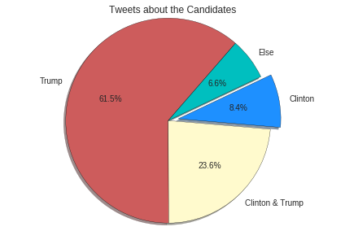
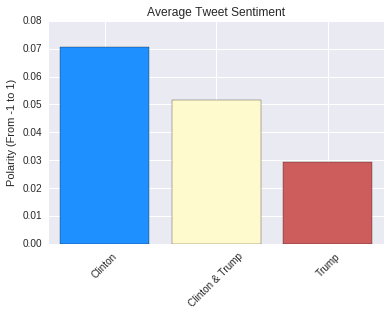
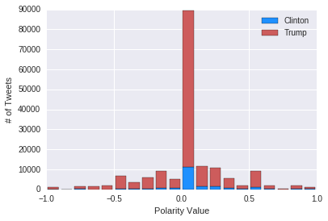

On Monday, September 26, Hillary Clinton and Donald Trump engaged in the first Presidential Debate of the election season. Being the most-watched presidential debate in history, it should come to no surprise that it's looking to be the
most tweeted debate ever, too. The following is an analysis of 243,821 tweets about the candidates collected through the duration of the event.
It seems that with every event Trump manages to gain the spotlight not only in the media, but in the public discussion as well.
149,834 of the tweets pertained strictly to Donald Trump, while only
20,469 of the tweets were about Hillary Clinton.
Using a natural language processing library, the tweets were each assigned a decimal value between -1 and 1, indicating whether they were negative (-1 is most negative) or positive sentiments. Both candidates had more positive tweets about them than negative. There were
1.4 times as many good tweets about Trump as there were negative, while Hillary Clinton had a far greater margin. Her ratio?
2.5. This means most of the tweets about Hillary had good things to say about her, indicating that she did well in the debate, and that emotions about Trump's performance were more spread out.


© 2016 Andres Avalos All Rights Reserved